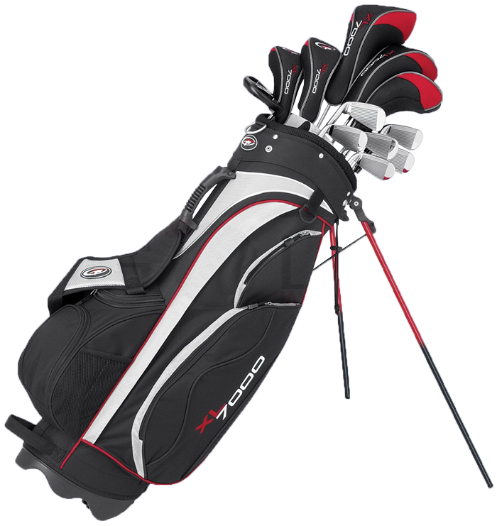
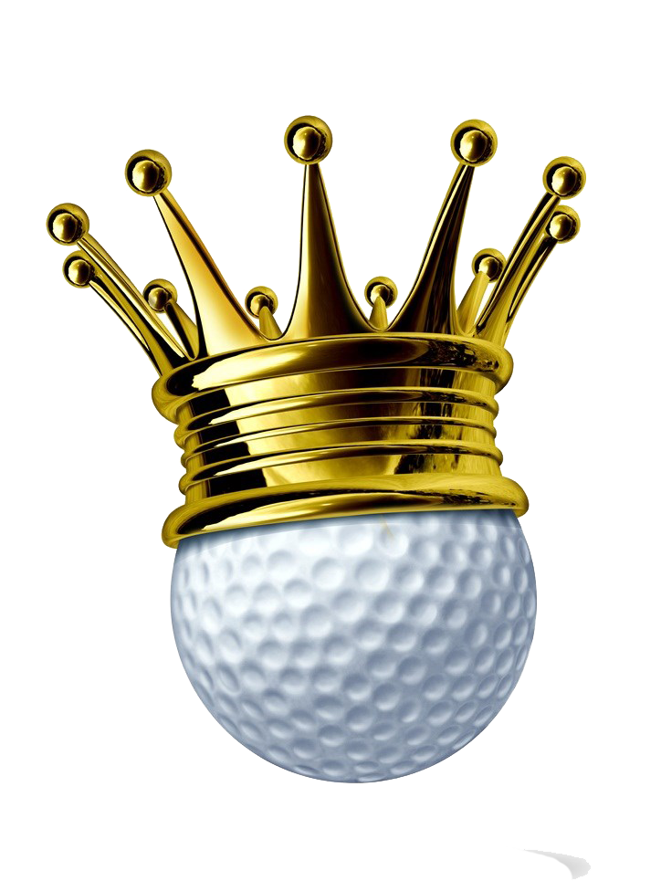

Golf Trivia
You will have 60 seconds to answer 10 challenging golf trivia questions
Start Game
Results
Start Over

1. What is the maximum number of clubs you are allowed to carry in your golf bag?
15
16
14
13
2. Which country has the most golf courses per capita in the World?
Scotland
USA
Ireland
Australia

3. Who is the only golfer to ever complete the Grand Slam?
Tiger Woods
Jack Nicklaus
Ben Hogan
Bobby Jones
4. Jack Nicklaus has won the most career major championships, how many has he won?
17
18
20
19
5. Who has the record for the most wins at The Masters?
Tiger Woods
Bobby Jones
Jack Nicklaus
Phil Mickelson
6. Who is the golfer with the most career wins on the PGA tour?
Sam Snead
Gary Player
Tiger Woods
Jack Nicklaus
7. What is the only Grand Slam event Lee Trevino never won?
PGA Championship
The Open Championship
US Open
The Masters
8. What female golfer's high school nickname was "Taco"?
Brittany Lincicome
Michelle Wie
Nancy Lopez
Paula Creamer
9. Who was the first golfer since Jack Nicklaus to win eight PGA events his first six years on tour?
Phil Mickelson
Tiger Woods
Rory McIlroy
Bubba Watson
10. What actor likes golf so much, that in all of his movie contracts he has a clause to play 2 rounds of golf every week?
Leslie Nielson
Samuel L. Jackson
Dwayne 'The Rock' Johnson
Vin Diesel
Submit Your Answers